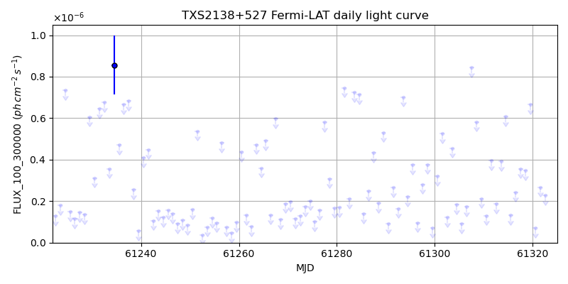
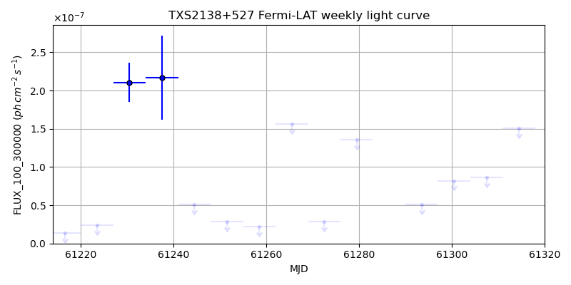
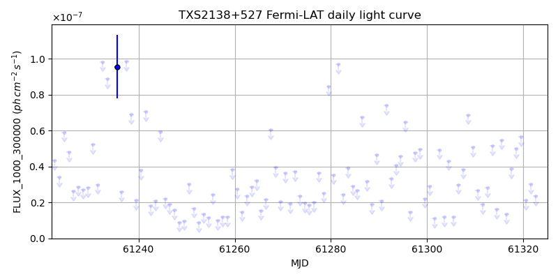
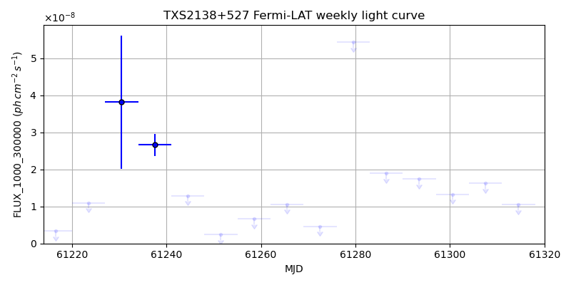

LAT Lightcurve site: https://fermi.gsfc.nasa.gov/ssc/data/access/lat/msl_lc/source/TXS_2138p527
NED: Query
Time of last update of this page: UT: 2026-10-10 15:28 (MJD: 61323.645)
| Property | Value |
|---|---|
| R.A. | 21:39:53.52 |
| Dec. | 53:00:18.0 |
| z | 0.000 |
| 3FGL SpectrumType | |
| 3FGL PL Index | -1.00 |
| 3FGL Flux_100_300000 | -1.00e+00 |
| 3FGL Flux_1000_300000 | -1.00e+00 |
| 3FGL Flux >200 GeV | -1.00e+00 |
| 3FGL Extrap. Crab >200 GeV | -1.00 |
| 3FGL Flux After EBL Absorption >200GeV | -1.00e+00 |
| 3FGL EBL Crab Fraction >200GeV | -1.00 |

| MJD | dMJD | Flux | dFlux | Frac3FGL | FracCrab>200GeV | EBLFracCrab>200GeV |
|---|---|---|---|---|---|---|
| 61318.50 | 0.50 | 3.48e-07 | 0.00e+00 | 0.00 | 0.00 | -0.00 |
| 61319.50 | 0.50 | 6.67e-07 | 0.00e+00 | 0.00 | 0.00 | -0.00 |
| 61320.50 | 0.50 | 6.98e-08 | 0.00e+00 | 0.00 | 0.00 | -0.00 |
| 61321.50 | 0.50 | 2.67e-07 | 0.00e+00 | 0.00 | 0.00 | -0.00 |
| 61322.50 | 0.50 | 2.28e-07 | 0.00e+00 | 0.00 | 0.00 | -0.00 |

| MJD | dMJD | Flux | dFlux | Frac3FGL | FracCrab>200GeV | EBLFracCrab>200GeV |
|---|---|---|---|---|---|---|
| 61286.50 | 3.50 | 3.77e-07 | 0.00e+00 | 0.00 | 0.00 | -0.00 |
| 61293.50 | 3.50 | 5.08e-08 | 0.00e+00 | 0.00 | 0.00 | -0.00 |
| 61300.50 | 3.50 | 8.22e-08 | 0.00e+00 | 0.00 | 0.00 | -0.00 |
| 61307.50 | 3.50 | 8.64e-08 | 0.00e+00 | 0.00 | 0.00 | -0.00 |
| 61314.50 | 3.50 | 1.50e-07 | 0.00e+00 | 0.00 | 0.00 | -0.00 |

| MJD | dMJD | Flux | dFlux | Frac3FGL | FracCrab>200GeV | EBLFracCrab>200GeV |
|---|---|---|---|---|---|---|
| 61318.50 | 0.50 | 5.00e-08 | 0.00e+00 | 0.00 | 0.00 | -0.00 |
| 61319.50 | 0.50 | 5.66e-08 | 0.00e+00 | 0.00 | 0.00 | -0.00 |
| 61320.50 | 0.50 | 2.11e-08 | 0.00e+00 | 0.00 | 0.00 | -0.00 |
| 61321.50 | 0.50 | 3.01e-08 | 0.00e+00 | 0.00 | 0.00 | -0.00 |
| 61322.50 | 0.50 | 2.36e-08 | 0.00e+00 | 0.00 | 0.00 | -0.00 |

| MJD | dMJD | Flux | dFlux | Frac3FGL | FracCrab>200GeV | EBLFracCrab>200GeV |
|---|---|---|---|---|---|---|
| 61286.50 | 3.50 | 1.90e-08 | 0.00e+00 | 0.00 | 0.00 | -0.00 |
| 61293.50 | 3.50 | 1.74e-08 | 0.00e+00 | 0.00 | 0.00 | -0.00 |
| 61300.50 | 3.50 | 1.33e-08 | 0.00e+00 | 0.00 | 0.00 | -0.00 |
| 61307.50 | 3.50 | 1.63e-08 | 0.00e+00 | 0.00 | 0.00 | -0.00 |
| 61314.50 | 3.50 | 1.04e-08 | 0.00e+00 | 0.00 | 0.00 | -0.00 |
--------------------------------------------------------- Using user-supplied coords: 21:39:53.52 53:00:18.0 2000 --------------------------------------------------------- FLWO UT night of: 2026-10-11 Local Sid. @ Midnight: 00:55 Sunset (-15.0) (local, UT): 19:04 02:04 Sunrise (-15.0) (local, UT): 05:18 12:18 Moonrise (local, UT): Moonset (local, UT): Moon phase: 0.01 --------------------------------------------------------- AzTime LSID UT Obj_el Obj_az Mn_el Mn_az Sep. --------------------------------------------------------- 19:04 19:58 02:04 61.8 33.1 -16.1 264.2 122.0 19:34 20:29 02:34 64.9 25.9 -22.3 267.8 121.9 20:04 20:59 03:04 67.3 16.3 -28.5 271.5 121.8 20:34 21:29 03:34 68.4 4.7 -34.7 275.4 121.7 21:04 21:59 04:04 68.3 352.5 -40.8 279.7 121.6 21:34 22:29 04:34 66.8 341.3 -46.8 284.6 121.5 22:04 22:59 05:04 64.3 332.3 -52.7 290.5 121.4 22:34 23:29 05:34 61.0 325.6 -58.4 297.7 121.3 23:04 23:59 06:04 57.1 321.0 -63.6 307.3 121.2 23:34 00:29 06:34 53.0 318.0 -68.1 320.3 121.1 00:04 00:59 07:04 48.6 316.2 -71.3 338.2 120.9 00:34 01:29 07:34 44.1 315.3 -72.6 0.4 120.8 01:04 01:59 08:04 39.6 315.2 -71.5 22.7 120.7 01:34 02:30 08:34 35.1 315.7 -68.3 40.8 120.6 02:04 03:00 09:04 30.7 316.6 -63.9 54.1 120.5 02:34 03:30 09:34 26.4 318.0 -58.7 63.8 120.4 03:04 04:00 10:04 22.2 319.8 -53.1 71.2 120.3 03:34 04:30 10:34 18.1 321.9 -47.3 77.2 120.2 04:04 05:00 11:04 14.3 324.4 -41.4 82.2 120.1 04:34 05:30 11:34 10.7 327.2 -35.3 86.6 120.0 05:04 06:00 12:04 7.4 330.3 -29.2 90.6 120.0 05:18 06:14 12:18 6.1 331.8 -26.5 92.4 119.9 --------------------------------------------------------- Dark hours >55 deg.: 4.26 srcstart (UT): 2026-10-11 02:04 srcend (UT): 2026-10-11 06:19